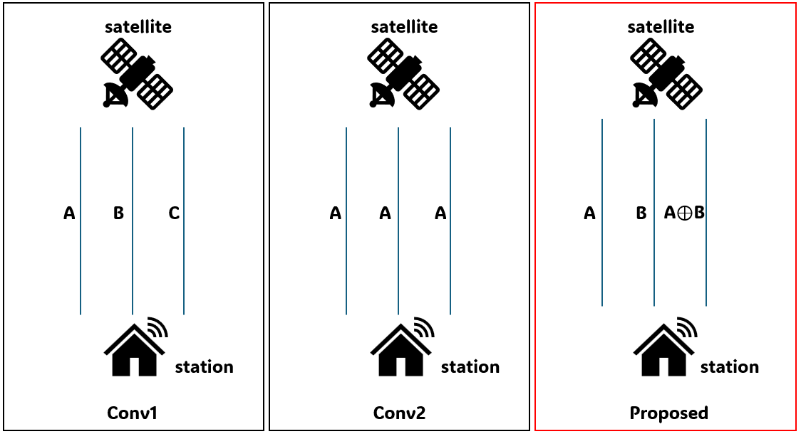
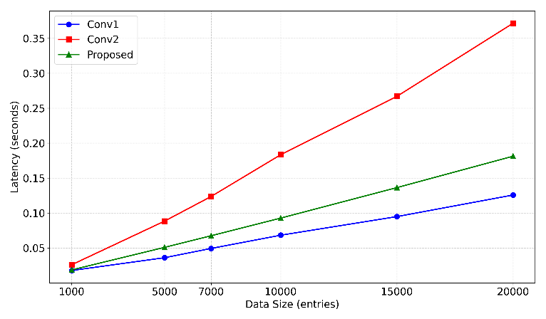
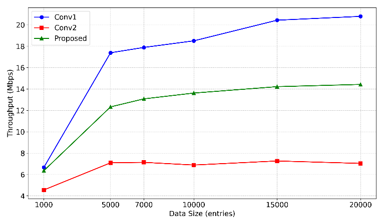
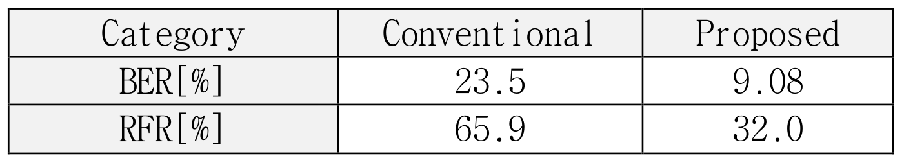

내용
위성 통신은 손실과 지연이 커서 링크 하나가 공격받아도 서비스가 멈출 수 있습니다.
- 통신 환경
- 전파 거리가 길고 주파수가 제한돼 지상 통신보다 손실과 지연이 큽니다.
- 실제 사례
- 2022년 KA-SAT 위성 사례에서는 우크라이나와 유럽에서 통신이 광범위하게 중단됐습니다.
Publication
데이터 두 개와 둘을 섞은 복구용 패킷을 여러 링크로 나눠 보냈습니다. 잡음이나 공격으로 링크 하나가 끊겨도 남은 패킷으로 원본을 복구하는지 확인했습니다.
DoS로 링크 하나를 제거한 시뮬레이션, Conv1 대비. 차이는 33.9%p
같은 조건
Conv1 0.07초, Conv2 약 0.18초
위성 통신은 손실과 지연이 커서 링크 하나가 공격받아도 서비스가 멈출 수 있습니다.
데이터 두 개와 둘을 섞은 복구용 패킷 하나를 세 링크에 나눠 보냅니다.

시뮬레이션에서 링크 하나가 끊겼을 때 복구 실패율이 65.9%에서 32.0%로 줄었습니다.



중복 전송보다 지연을 줄이면서 링크 손실 때 복구가 가능함을 시뮬레이션으로 보였습니다.
시뮬레이션에 머문 결과를 테스트베드에서 확인하는 일이 남았습니다.